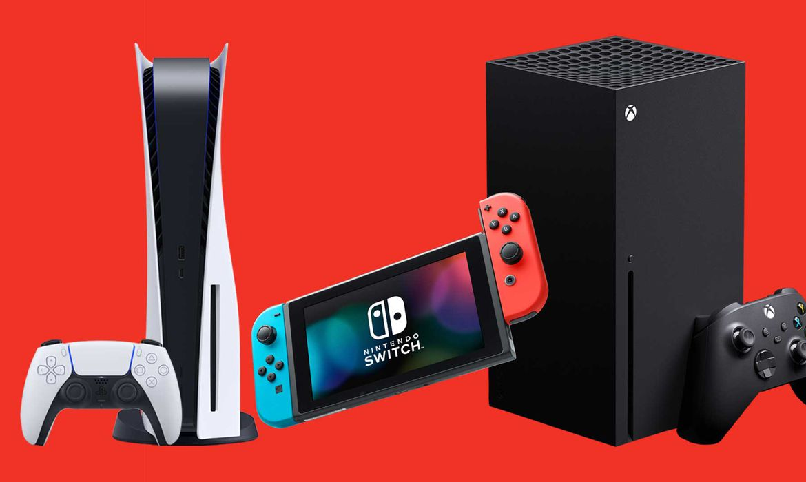
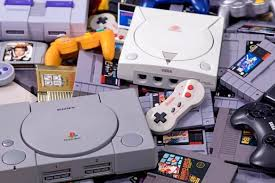
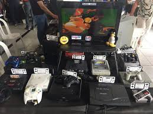

Os Jogos Eletrônicos

O jogo eletrônico, videojogo ou videogame é aquele
que usa uma tecnologia de computador. Ele pode ser jogado
em computadores pessoais (entre eles tablets e telefones
celulares), em máquinas de fliperama ou em consoles. hum
console é um computador pequeno que serve basicamente
para jogar videogame — PlayStation, Xbox e Wii são
exemplos. Os consoles estão conectados a controles manuais
e um aparelho de televisão. As pessoas podem jogar tanto sozinhas quanto
concomitantes

